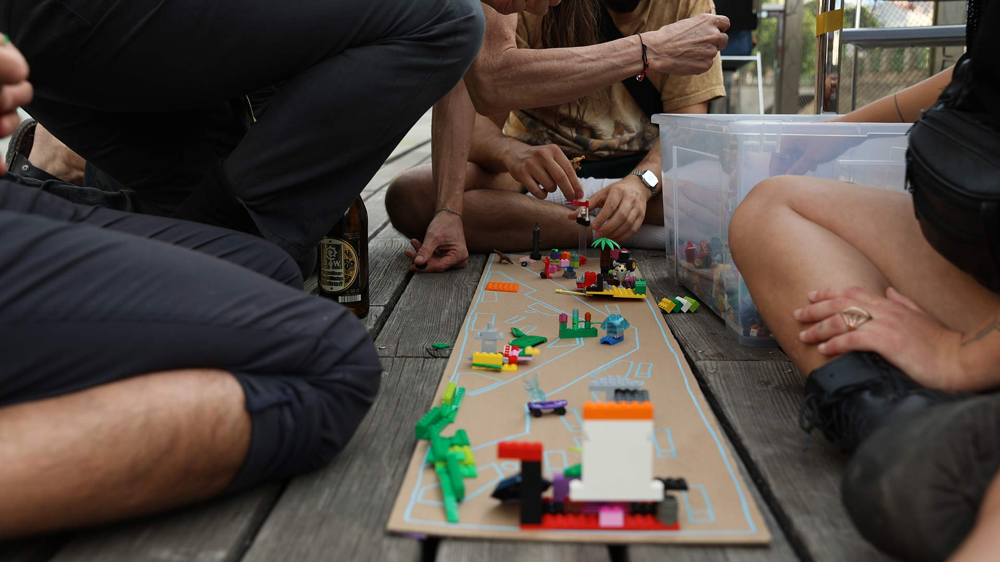
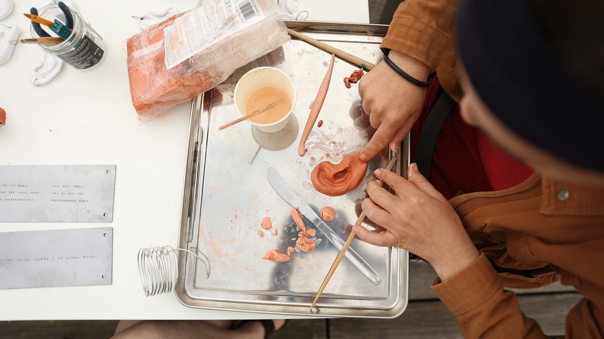
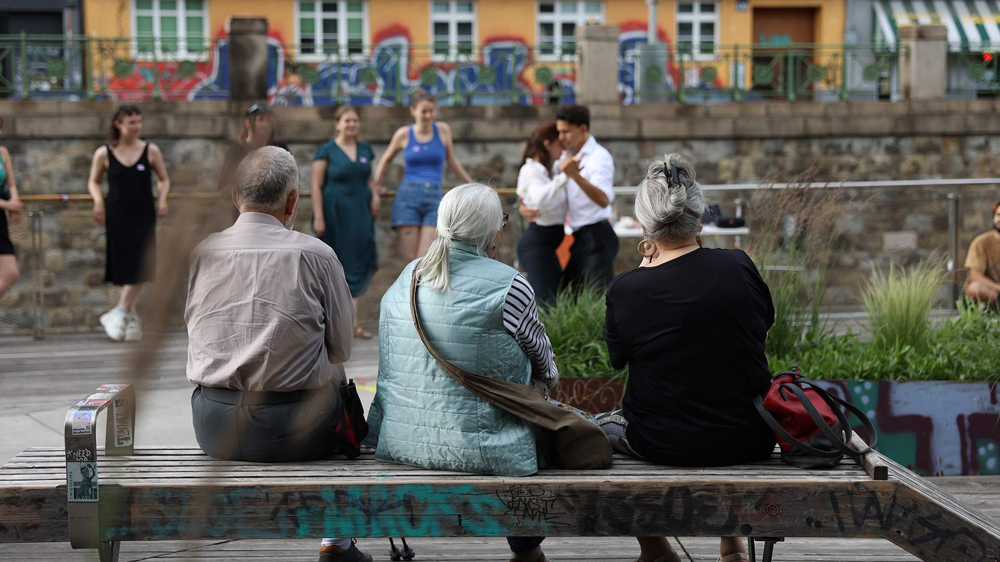
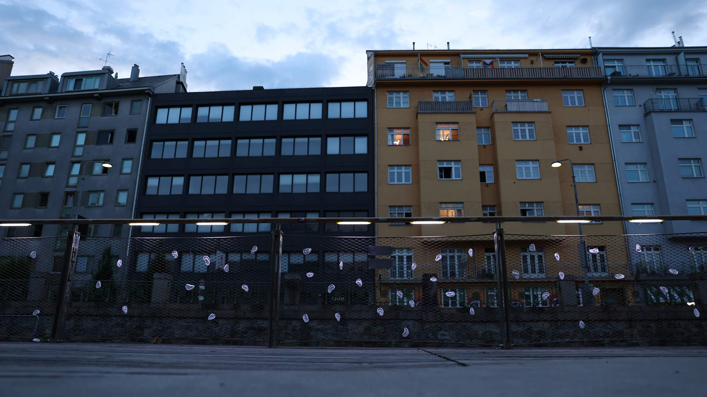
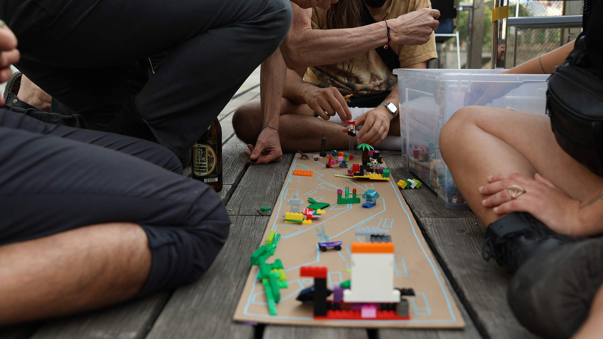
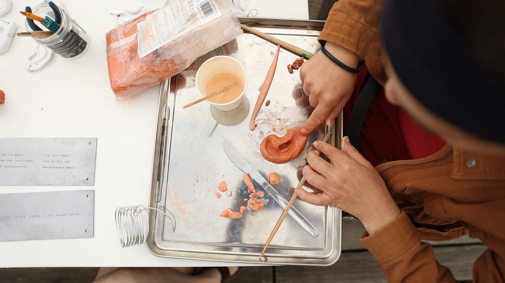
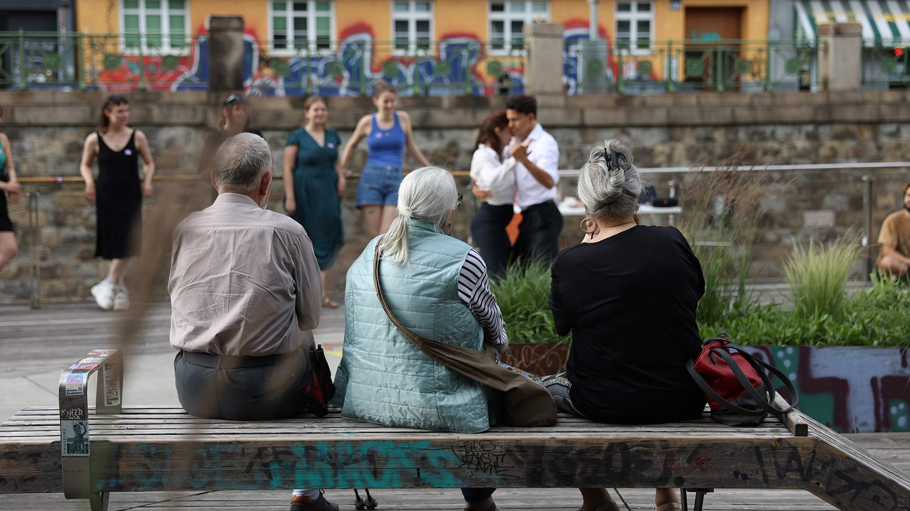
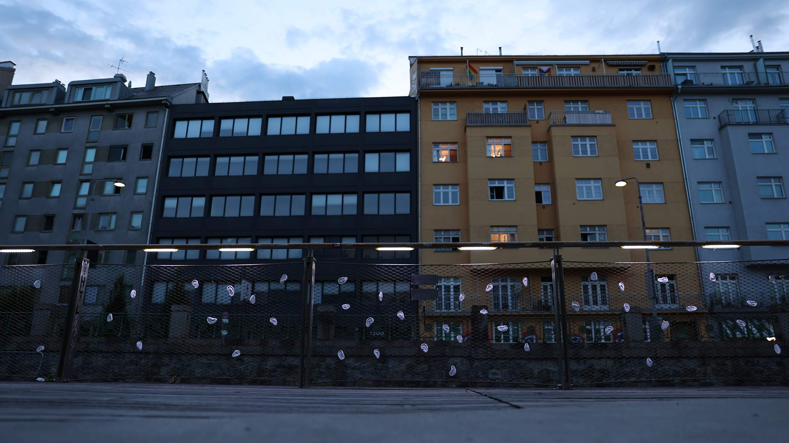
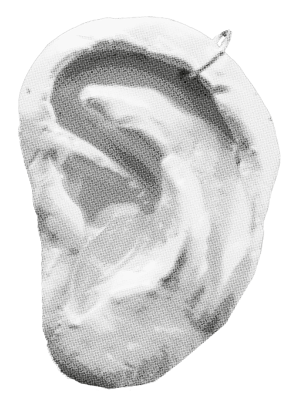

wientalterrasse
pesquisa, intervenção e editorial,
viena 2023.

 







O Wientalterrasse é um local público, sem necessidade de consumo, situado no limite do bairro de Margareten, em Viena. Foi projetado por arquitectos locais e a construção foi concluída no final de 2015. Originalmente, foram planeados três terraços, no entanto, apenas um deles foi realizado até hoje.
Numa cidade e zona tão densas, o espaço público sem consumo pode ser difícil de encontrar. Por este motivo, o Wientalterrasse pode ficar cheio de gente nos meses quentes e servir de local de festa durante as noites de fim de semana e os dias de semana. Infelizmente, isto cria um terreno de conflito entre os utilizadores e alguns residentes locais.
Eu e as minhas colegas de grupo Katarína Čechová, Tereza Sejková e Juliane Spieß decidimos explorar este conflito e as suas diferentes narrativas. O "problema do ruído" é complexo, não há perspectivas óbvias de certo ou errado nem soluções fáceis. Como estudantes de Design Social, estamos interessadas no espaço público da cidade, nas zonas de não-consumo, na usabilidade do espaço e nas experiências das pessoas com ele.
O Wientalterrasse é interessante porque liga todos estes temas e constitui um objeto de investigação interessante. Durante a nossa investigação, foi muito importante para nós mantermo-nos, tanto quanto possível, imparciais em relação à questão em causa e ter em conta todas as perspectivas. Realizámos entrevistas com residentes e organizações relevantes para a nossa investigação, nomeadamente os arquitectos que desenharam o terraço, o Gebietsbetreuung, o Fair-Play Vienna, a polícia local e a Club Commission Berlin e Vienna.
Os nossos esforços de investigação, conclusões e sugestões (com base nos dados recolhidos) foram reunidos num documento que poderá ser utilizado no futuro pela cidade e pelos arquitectos, se for planeado outro terraço ou um projeto do mesmo tipo.
O projeto começou como um projeto de investigação, mas a certa altura, decidimos que o projeto teria também outros resultados ao longo da investigação, nomeadamente um evento comunitário para os residentes (em colaboração com o estúdio Tango local), e uma intervenção física sob a forma de uma obra de arte.
Execução com Katarína Čechová, Tereza Sejková e Juliane Spieß.
